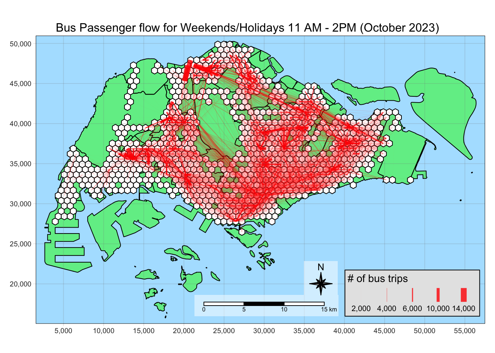
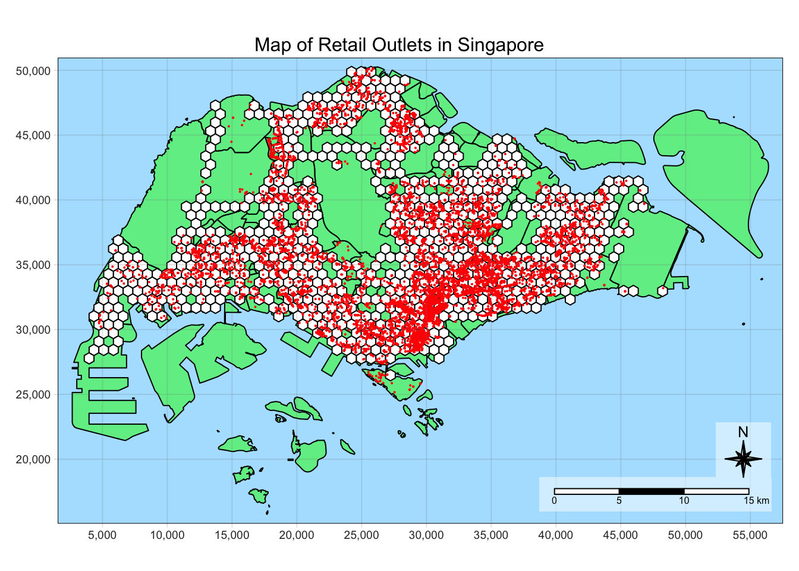
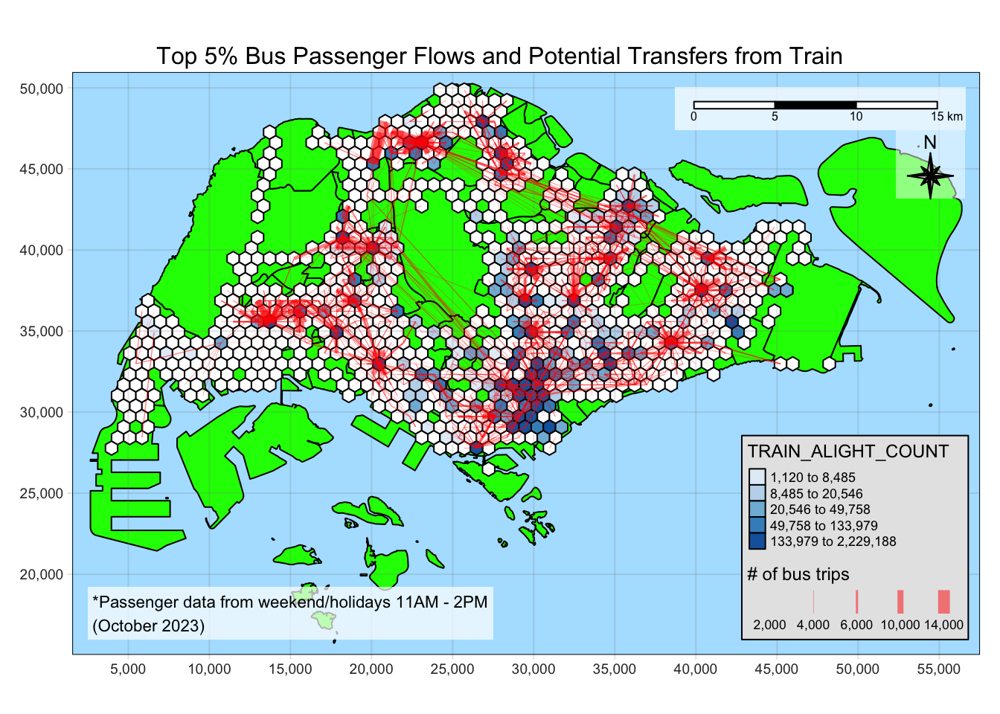

message <- "This code chunk executed"Take Home Exercise 2: A Case Study of Singapore Public Bus Commuter Flows
Overview
The aim of this exercise to study the bus commuter flow patterns in Singapore to gain insights that support decision-making.
We will be examining the weekend morning peak hours (11 AM - 2 PM) to figure out where people go during weekends and holidays.
We will also be the modelling the spatial interaction between the different locations in Singapore, related to the bus commuter patterns.
Check https://isss624-ay2023-24nov.netlify.app/take-home_ex02 for the full requirements of this exercise.
The Analysis
The analysis has two parts: (1) analyzing the spatial interactions between pairs of zone, (2) modelling the interaction.
We will create a honeycomb grid with hexagons with a distance of 375m from the center to the midpoint of the edge as the traffic analysis zone (TAZ). These hexagons will serve as the zones for our analysis.
We will visualize the interactions by plotting the flow lines corresponding to the number of trips between each pair of zones.
We need the following to start this analysis:
geometry with the traffic analysis zones
data about the number of trips between different pairs of zones
We will generate 4 log-based Poisson models:
origin-constrained model
destination-constrained model
unconstrained model
doubly-constrained model
We need the following to start this analysis:
geometry with the traffic analysis zones
propulsiveness variables, which influence the number of of trips originating from a zone
attractiveness variables, which influence bus commuters to make a trip a zone
data about the number of trips between different pairs of zones
distance between each pair of zone
We use the different variables to generate formula for each model, which will be explored further in their respective sections.
Once the models are generated, we will also compare the models as to which one best fits our data, using goodness of fit test or \(R^2\) test.
To perform our modelling, we need to identify the propulsiveness and attractiveness variables we will use for our model.
As our data will be based on real-world data, Passenger Volume By Origin Destination Bus Stops from LTA DataMall via API, we can think of possible factors based on our real-world experience.
As we are interested in the factors that influence weekend/holiday morning (11 AM - 2PM) peak period bus commuting patterns, we will consider the following variables.
Attractiveness variables are factors that can motivate people to go to their destinations. In our case, these are what motivates people to ride to their destination bus stop.
| Variable | Data Source | Motivation |
|---|---|---|
BUS_STOP_COUNT |
Bus Stop Location from LTA DataMall | Transferring to another bus to their end destination |
TRAIN_EXITS_COUNT |
Train Station Exit Point from LTA DataMall | Transferring to train to their end destination |
HDB_COUNT |
hdb.csv aspatial data provided on E-learn |
To meet up with friends/family |
ENTERTN_COUNT |
entertn.shp geospatial data provided on E-learn |
For recreation, spending time with friends/family |
F_AND_B_COUNT |
F&B.shp geospatial data provided on E-learn |
For spending time with friends/family |
LEISURE_COUNT |
Liesure&Recreation.shp geospatial data provided on E-learn |
For recreation, spending time with friends/family |
RETAIL_COUNT |
Retails.shp geospatial data provided on E-learn |
For errands, shopping, spending time with friends/family |
Propulsiveness variables are factors that influence people to ride the bus from specific zones. This is based on the number of potential passengers at the origin zones.
| Variable | Data Source | Motivation |
|---|---|---|
BUS_ALIGHT_COUNT |
Passenger Volume By Origin Destination Bus Stops from LTA DataMall via API | Passengers who alight from a bus stop within can transfer to another bus to reach |
TRAIN_ALIGHT_COUNT |
Passenger Volume By Train Stations from LTA DataMall via API | Passengers who alight from a train station can transfer to a bus to reach their final destination |
HDB_RESIDENT_COUNT |
hdb.csv aspatial data provided on E-learn |
Residents in an area are potential bus passengers as they leave their homes |
Data Outputs
To accomplish our analysis, we need to prepare the data with the following specifications.
For all our geospatial data, we will use the SVY21 projection it is appropriate for the Singapore context. Also, having a consistent projection will make it straightforward to use the functions from sfdep.
Managing our data
As this process is expected to have a lot of intermediate steps, Save, Load, and Data clear points are available to make our data wrangling more efficient.
Save point
This is where data is written as rds files using write_rds() for important data sets that will be used in later analysis. Examples are:
- Data we need to prepare for analysis
- Critical outputs of expensive calculations
- Cleaned up data for lightweight processing
Load point
This is where data is loaded from rds files using read_rds(). They were previously generated by the save point.
TIP: Skip to the load points to progress without running the code above it
Data clear point
This is where data that will not be used anymore are cleared. The data in RStudio environment will pile up and will make it more difficult to check the relevant data in each part.
We can set #| eval: false in code chunks if we want skip the clearing. For example, the code below won’t be run.
Setup
Using the data sources identified in Data Outputs, we will download the datasets and add them into our data/ directory.
We will also prepare the data/rds/ directory to save the data we from our Load point. After the setup we are left with the directory structure below.
Directory structure
Take-home_Ex2/data
├── aspatial
│ ├── hdb.csv
│ ├── origin_destination_bus_202310.csv
│ └── origin_destination_train_202310.csv
├── geospatial
│ ├── BusStop.cpg
│ ├── BusStop.dbf
│ ├── BusStop.lyr
│ ├── BusStop.prj
│ ├── BusStop.sbn
│ ├── BusStop.sbx
│ ├── BusStop.shp
│ ├── BusStop.shp.xml
│ ├── BusStop.shx
│ ├── F&B.cpg
│ ├── F&B.dbf
│ ├── F&B.prj
│ ├── F&B.qix
│ ├── F&B.qmd
│ ├── F&B.shp
│ ├── F&B.shx
│ ├── Liesure&Recreation.cpg
│ ├── Liesure&Recreation.dbf
│ ├── Liesure&Recreation.prj
│ ├── Liesure&Recreation.qmd
│ ├── Liesure&Recreation.shp
│ ├── Liesure&Recreation.shx
│ ├── MPSZ-2019.cpg
│ ├── MPSZ-2019.dbf
│ ├── MPSZ-2019.prj
│ ├── MPSZ-2019.qmd
│ ├── MPSZ-2019.shp
│ ├── MPSZ-2019.shx
│ ├── RapidTransitSystemStation.cpg
│ ├── RapidTransitSystemStation.dbf
│ ├── RapidTransitSystemStation.lyr
│ ├── RapidTransitSystemStation.prj
│ ├── RapidTransitSystemStation.sbn
│ ├── RapidTransitSystemStation.sbx
│ ├── RapidTransitSystemStation.shp
│ ├── RapidTransitSystemStation.shp.xml
│ ├── RapidTransitSystemStation.shx
│ ├── Retails.cpg
│ ├── Retails.dbf
│ ├── Retails.prj
│ ├── Retails.qix
│ ├── Retails.qmd
│ ├── Retails.shp
│ ├── Retails.shx
│ ├── entertn.cpg
│ ├── entertn.dbf
│ ├── entertn.prj
│ ├── entertn.qix
│ ├── entertn.qmd
│ ├── entertn.shp
│ └── entertn.shx
└── rdsWe will use the following R packages to run the code needed for data analysis.
These are the default setting we will use, and initial setup required for the environment.
tmap_modeto plot: for plotting simple mapstmap_styleto natural: for my preferred mapping styleset seed for reproducibility of results
Using the setup tasks identified above, we will now run the setup code.
We will label this code chunk with label: setup so it will always be run even if we reset our environment and start in the middle of the page
pacman::p_load(sf, sp, tmap, tidyverse, knitr, stplanr, reshape2)
#pacman::p_load(sf, sp, tmap, tidyverse, knitr, sfdep, stplanr, reshape2)
tmap_mode("plot")
tmap_style("natural")
set.seed(1234)Data Wrangling
Using the Data Outputs previously identified, we generate the dependency map below.

We will use this as a guide to do our complex data wrangling tasks.
Utility
We will first start by preparing the data needed for utility, [Singapore Boundary geometry (mpsz)] and [Honeycomb grid corresponding to bus stop locations (honeycomb)].
Importing the datasets
We will import the datasets needed to prepare the utility data.
We will import the Master Plan 2019 Subzone Boundary (Web) data set that has been used in class. We will only keep the SUBZONE_N column and the geometry as we will only use this as the base for our visualizations.
mpsz <- st_read(dsn = "data/geospatial",
layer = "MPSZ-2019") %>%
select(SUBZONE_N)Reading layer `MPSZ-2019' from data source
`/Users/kjcpaas/Documents/Grad School/ISSS624/Project/ISSS624/Take-home_Ex2/data/geospatial'
using driver `ESRI Shapefile'
Simple feature collection with 332 features and 6 fields
Geometry type: MULTIPOLYGON
Dimension: XY
Bounding box: xmin: 103.6057 ymin: 1.158699 xmax: 104.0885 ymax: 1.470775
Geodetic CRS: WGS 84
Correcting the projection
Visual inspection
We will do a quick visual inspection to check if the map has been imported as expected.
Show the code
tm_shape(mpsz) +
tm_polygons("lightgreen", title = "Singapore Boundary") +
tm_layout(main.title = "Map of Singapore",
main.title.position = "center",
main.title.size = 1.0,
legend.height = 0.35,
legend.width = 0.35,
frame = TRUE) +
tm_compass(type="8star", size = 2) +
tm_scale_bar() +
tm_grid(alpha = 0.2)Next, we need to import the bus stop data as we will generate the honeycomb grid based on locations with bus stops.
busstops <- st_read(dsn = "data/geospatial",
layer = "BusStop")Reading layer `BusStop' from data source
`/Users/kjcpaas/Documents/Grad School/ISSS624/Project/ISSS624/Take-home_Ex2/data/geospatial'
using driver `ESRI Shapefile'
Simple feature collection with 5161 features and 3 fields
Geometry type: POINT
Dimension: XY
Bounding box: xmin: 3970.122 ymin: 26482.1 xmax: 48284.56 ymax: 52983.82
Projected CRS: SVY21
Correcting the projection
We want to use SVY21 as the projection for this study as it is the projection used for local Singaporean context.
After the import, it shows that the Projected CRSis SVY21. However, checking the CRS with st_crs() tells a different story.
st_crs(busstops)Coordinate Reference System:
User input: SVY21
wkt:
PROJCRS["SVY21",
BASEGEOGCRS["WGS 84",
DATUM["World Geodetic System 1984",
ELLIPSOID["WGS 84",6378137,298.257223563,
LENGTHUNIT["metre",1]],
ID["EPSG",6326]],
PRIMEM["Greenwich",0,
ANGLEUNIT["Degree",0.0174532925199433]]],
CONVERSION["unnamed",
METHOD["Transverse Mercator",
ID["EPSG",9807]],
PARAMETER["Latitude of natural origin",1.36666666666667,
ANGLEUNIT["Degree",0.0174532925199433],
ID["EPSG",8801]],
PARAMETER["Longitude of natural origin",103.833333333333,
ANGLEUNIT["Degree",0.0174532925199433],
ID["EPSG",8802]],
PARAMETER["Scale factor at natural origin",1,
SCALEUNIT["unity",1],
ID["EPSG",8805]],
PARAMETER["False easting",28001.642,
LENGTHUNIT["metre",1],
ID["EPSG",8806]],
PARAMETER["False northing",38744.572,
LENGTHUNIT["metre",1],
ID["EPSG",8807]]],
CS[Cartesian,2],
AXIS["(E)",east,
ORDER[1],
LENGTHUNIT["metre",1,
ID["EPSG",9001]]],
AXIS["(N)",north,
ORDER[2],
LENGTHUNIT["metre",1,
ID["EPSG",9001]]]]As we can see EPSG value is 9001, which correspond to WGS84. We have to fix the projection by transforming to EPSG value of 3414, which corresponds to SVY21.
busstops <- st_transform(busstops, crs = 3414)
Visual inspection
We will do a quick visual inspection to check if the map has been imported as expected.
Show the code
tmap_style("natural")
tm_shape(mpsz) +
tm_polygons("lightgreen", title = "Singapore Boundary") +
tm_layout(main.title = "Map of bus stops in Singapore",
main.title.position = "center",
main.title.size = 1.0,
legend.height = 0.35,
legend.width = 0.35,
frame = TRUE) +
tm_shape(busstops) +
tm_dots(col = "red", size = 0.005, title = "Bus Stops") +
tm_compass(type="8star", size = 2) +
tm_scale_bar() +
tm_grid(alpha = 0.2)
The map shows that there are bus stops in our data set that are outside Singapore bounds (green area). We need to remove them as we are only interested in bus stops within Singapore.
Removing the bus stops outside Singapore
We can remove the points outside Singapore from our busstops data by using st_intersection().
We will use this as busstops contains points, the intersection of the 2 geometries will generate points corresponding to the bus stops within Singapore.
We will also just retain the BUS_STOP_N to remove the columns we do not need.
busstops <- busstops %>% st_intersection(mpsz) %>% select(BUS_STOP_N, )Visualizing again, all the bus stops are now within Singapore.
Show the code
tmap_style("natural")
tm_shape(mpsz) +
tm_polygons("lightgreen", title = "Singapore Boundary") +
tm_layout(main.title = "Map of bus stops in Singapore",
main.title.position = "center",
main.title.size = 1.0,
legend.height = 0.35,
legend.width = 0.35,
frame = TRUE) +
tm_shape(busstops) +
tm_dots(col = "red", size = 0.005, title = "Bus Stops") +
tm_compass(type="8star", size = 2) +
tm_scale_bar() +
tm_grid(alpha = 0.2)
Save point
Let’s save mpsz geometry as this is one of our Utility data outputs, [Singapore Boundary geometry (mpsz)].
We will also save busstops for later use.
write_rds(mpsz, "data/rds/mpsz.rds")
write_rds(busstops, "data/rds/busstops.rds")Generating the honeycomb grid
Finally, we can generate the honeycomb grid using st_make_grid(), providing cellsize of 750m.
Calculating cellsize
Apothem is defined as the perpendicular from the center of a regular polygon to one of the sides.
The specification is this study requires hexagons to be 375 m from the center of the hexagon to the center of one of it’s edge.

As such, this corresponds to the length of 2 opposite apothems, which is 750 m.
The edge length is not the same as apothem. It is 433.013 mm.
\[ 375m/cos(30) = 433.013m \]
honeycomb <- busstops %>% st_make_grid(cellsize = 750,
what="polygons",
square = FALSE) %>%
st_sf() %>%
filter(lengths(st_intersects(geometry, busstops)) > 0)
Code Explanation
- st_make_grid()
-
Creates a grid that covers the entire bus stop geometry, including areas without bus stop.
- st_sf()
-
Converts to simple feature data set
- st_intersects()
-
Checks if the hexagons have bus stops
- filter()
-
Removes hexagons without bus stops
Let’s plot the map to visually inspect if the hexagons cover all the bus stop locations.
Show the code
tm_shape(mpsz) +
tm_polygons("green", title = "Singapore Boundary", alpha = 0.5) +
tm_shape(honeycomb) +
tm_polygons(col = "white", title = "Hexagons", alpha = 1) +
tm_layout(main.title = "Honeycomb grid corresponding to Singapore bus stops",
main.title.position = "center",
main.title.size = 1.0,
legend.height = 0.35,
legend.width = 0.35,
frame = TRUE) +
tm_compass(type="8star", size = 2, bg.color = "white", bg.alpha = 0.5) +
tm_scale_bar(bg.color = "white", bg.alpha = 0.5) +
tm_shape(busstops) +
tm_dots(col = "red", size = 0.001, title = "Bus Stops") +
tm_grid(alpha = 0.2)
Assigning id to each hexagon
Now that we have hexagons properly generated, we will assign id for each hexagon to be used as a unique identifier. We will store this id under the HEX_ID column, and can be used in joining data frames.
honeycomb$HEX_ID <- sprintf("H%04d", seq_len(nrow(honeycomb))) %>% as.factor()
kable(head(honeycomb))| geometry | HEX_ID |
|---|---|
| POLYGON ((3970.122 27348.13… | H0001 |
| POLYGON ((4345.122 27997.65… | H0002 |
| POLYGON ((4345.122 30595.72… | H0003 |
| POLYGON ((4720.122 28647.16… | H0004 |
| POLYGON ((4720.122 29946.2,… | H0005 |
| POLYGON ((4720.122 31245.24… | H0006 |
Save point
Let’s save honeycomb as it contains the main geometry we will use in analysis.
write_rds(honeycomb, "data/rds/honeycomb.rds")Spatial Interaction Analysis
Load point
We can start from this point by loading the relevant datasets.
mpsz <- read_rds("data/rds/mpsz.rds")
honeycomb <- read_rds("data/rds/honeycomb.rds")
busstops <- read_rds("data/rds/busstops.rds")Importing the datasets
We will import the datasets needed to prepare the data outputs, [Number of trips between 2 zones (od_hex)] and [Flow Lines (flowlines)].
Aside from the output of Utility, we also need to import the Passenger Volume By Origin Destination Bus Stops from LTA DataMall via API for the month of October 2023.
The data set is an aspatial data in csv format so we will use read_csv() to import the data.
We will use the October 2023 passenger data in this document. If you want to use dataset for another month, replace 202310 to the corresponding YYYYMM format.
odbus <- read_csv("data/aspatial/origin_destination_bus_202310.csv")
kable(head(odbus))| YEAR_MONTH | DAY_TYPE | TIME_PER_HOUR | PT_TYPE | ORIGIN_PT_CODE | DESTINATION_PT_CODE | TOTAL_TRIPS |
|---|---|---|---|---|---|---|
| 2023-10 | WEEKENDS/HOLIDAY | 16 | BUS | 04168 | 10051 | 3 |
| 2023-10 | WEEKDAY | 16 | BUS | 04168 | 10051 | 5 |
| 2023-10 | WEEKENDS/HOLIDAY | 14 | BUS | 80119 | 90079 | 3 |
| 2023-10 | WEEKDAY | 14 | BUS | 80119 | 90079 | 5 |
| 2023-10 | WEEKDAY | 17 | BUS | 44069 | 17229 | 4 |
| 2023-10 | WEEKENDS/HOLIDAY | 17 | BUS | 20281 | 20141 | 1 |
Generating the O-D trip data by hexagon level
Filtering the relevant data
We only need the data for the weekend morning peak period, which is from 11 AM - 2 PM on weekends and holidays. As such, we will filter the data for the relevant hours.
We will also rename the ORIGIN_PT_CODE and DESTINATION_PT_CODE to be consistent with the naming with busstops as these columns can be associated to busstops’s BUS_STOP_N
How to filter data by TIME_PER_HOUR
The TIME_PER_HOUR in data set covers the data from the start to the end of the hour in 24-hour format, i.e. when TIME_PER_HOUR = 13, this means bus taps from 1:00 PM ton1:59:59PM.
Hence, if we want to get 11AM to 2PM data, we will filter by:
TIME_PER_HOUR >= 11 & TIME_PER_HOUR < 14od_trips <- odbus %>%
filter(DAY_TYPE == "WEEKENDS/HOLIDAY") %>%
filter( TIME_PER_HOUR >= 11 &
TIME_PER_HOUR < 14
) %>%
group_by(ORIGIN_PT_CODE, DESTINATION_PT_CODE) %>%
summarise(TRIPS = sum(TOTAL_TRIPS)) %>%
rename(
ORIG_BUS_STOP_N = ORIGIN_PT_CODE,
DEST_BUS_STOP_N = DESTINATION_PT_CODE
)
kable(head(od_trips))| ORIG_BUS_STOP_N | DEST_BUS_STOP_N | TRIPS |
|---|---|---|
| 01012 | 01112 | 204 |
| 01012 | 01113 | 129 |
| 01012 | 01121 | 95 |
| 01012 | 01211 | 91 |
| 01012 | 01311 | 152 |
| 01012 | 01559 | 5 |
Data clear point
We do not need odbus anymore as we already extracted the data relevant to our analysis.
rm(odbus)Generating lookup table for bus stop to associated hexagon
To connect the trip data to the their corresponding hexagon, we need to create a lookup table. This will serve as a glue in associating the aspatial od_trips data frame to the honeycomb data frame.
This can be done via st_intersection().
bs_hex <- st_intersection(busstops, honeycomb) %>%
st_drop_geometry() %>%
select(c(BUS_STOP_N, HEX_ID))
kable(head(bs_hex))| BUS_STOP_N | HEX_ID | |
|---|---|---|
| 3269 | 25059 | H0001 |
| 2570 | 25751 | H0002 |
| 254 | 26379 | H0003 |
| 2403 | 26369 | H0003 |
| 2829 | 25741 | H0004 |
| 1715 | 26399 | H0005 |
Joining od_trips and bs_hex
Next, we need to associate each origin bus stop and destination bus stop to their corresponding hexagons.
We can use that by doing inner_join() twice, once for the origin and another for the destination.
Why inner_join() instead of left_join()?
We will use inner_join as there are BUS_STOP_N values in od_trips data that are not in bs_hex.
c(
od_trips$ORIG_BUS_STOP_N[!(od_trips$ORIG_BUS_STOP_N %in% bs_hex$BUS_STOP_N)],
od_trips$DEST_BUS_STOP_N[!(od_trips$DEST_BUS_STOP_N %in% bs_hex$BUS_STOP_N)]
) %>% unique() %>% length()[1] 59There are 59 bus stops in od_trips that are not in bs_hex. 5 of these can be attributed the bus stops we removed due to them being out in Singapore. Others may be due to the BusStops data set not having complete information.
The proper way to handle this is to validate the existence of each of these bus stops and look at public sources (e.g. Google Maps, LTA data) and add coordinate data. However, as we do not have much to do this task, we have to remove these bus stops from our analysis as we do not have geospatial data to associate to the hexagons from the data sets available to us.
Therefore, we will use inner_join to keep only the observations in trips with the matching bus stops in bs_hex.
od_trips_w_hex <- od_trips %>%
inner_join(bs_hex,
by = c("ORIG_BUS_STOP_N" = "BUS_STOP_N")) %>%
rename(ORIG_HEX_ID = HEX_ID) %>%
inner_join(bs_hex,
by = c("DEST_BUS_STOP_N" = "BUS_STOP_N")) %>%
rename(DEST_HEX_ID = HEX_ID)
kable(head(od_trips_w_hex))| ORIG_BUS_STOP_N | DEST_BUS_STOP_N | TRIPS | ORIG_HEX_ID | DEST_HEX_ID |
|---|---|---|---|---|
| 01012 | 01112 | 204 | H0515 | H0527 |
| 01012 | 01113 | 129 | H0515 | H0527 |
| 01012 | 01121 | 95 | H0515 | H0550 |
| 01012 | 01211 | 91 | H0515 | H0550 |
| 01012 | 01311 | 152 | H0515 | H0561 |
| 01012 | 01559 | 5 | H0515 | H0550 |
Aggregating data by hexagon
Next, we will perform aggregations by ORIG_HEX_ID and DEST_HEX_ID to have an aggregated sum of trips by hexagon instead of bus stops.
od_hex <- od_trips_w_hex %>%
group_by(ORIG_HEX_ID, DEST_HEX_ID) %>%
summarise(TRIPS = sum(TRIPS))
kable(head(od_hex))| ORIG_HEX_ID | DEST_HEX_ID | TRIPS |
|---|---|---|
| H0002 | H0016 | 1 |
| H0002 | H0017 | 2 |
| H0002 | H0032 | 16 |
| H0003 | H0005 | 1 |
| H0003 | H0022 | 56 |
| H0003 | H0028 | 10 |
Save point
Let’s save od_hex as it contains the TRIP data needed to visualize flow data and do spatial interaction modelling. Take note that this includes intra-zonal trips.
We will also write save od_trips as we need this later for calculating propulsiveness variables.
write_rds(bs_hex, "data/rds/bs_hex.rds")
write_rds(od_hex, "data/rds/od_hex202310.rds")
write_rds(od_trips, "data/rds/od_trips202310.rds")
Data clear point
We do not need bs_hex, od_trips_w_hex anymore as we already have the necessary data for doing hexagon-based analysis in od_hex.
We will also remove od_trips for now as we do not need them until the later sections.
rm(bs_hex)
rm(od_trips)
rm(od_trips_w_hex)Generating the flow lines
First, we will generate the flow lines using od2line(). honeycomb will be supplied as the zone as it contains the hexagons we are using as the traffic analysis zones.
flowlines <- od_hex %>% od2line(
honeycomb,
zone_code = "HEX_ID")Initial inspection of the flow lines
Next, we will do an initial inspection of the flow lines to check if they have been generated correctly.
Show the code
tm_shape(mpsz) +
tm_polygons("green", title = "Singapore Boundary", alpha = 0.5) +
tm_shape(honeycomb) +
tm_polygons(col = "white", title = "Hexagons", alpha = 1) +
tm_shape(flowlines) +
tm_lines(lwd = "TRIPS",
style = "quantile",
col = "red",
scale = c(0.1, 1, 3, 5, 7),
title.lwd = "# of bus trips",
alpha = 0.8) +
tm_layout(main.title = "Bus Passenger flow for Weekends/Holidays 11 AM - 2PM (October 2023)",
main.title.position = "center",
main.title.size = 1.0,
legend.height = 0.35,
legend.width = 0.35,
frame = TRUE) +
tm_compass(type="8star", size = 2, bg.color = "white", bg.alpha = 0.5) +
tm_scale_bar(bg.color = "white", bg.alpha = 0.5) +
tm_grid(alpha = 0.2)
Insights
The flow lines are sparse at the West side of Singapore, the Jurong and Choa Chu Kang areas. This is consistent with the observations that we have in the Take-home Exercise 1 that these areas are least busy in terms of bus rides.
We can also notice that the thickest flow lines is between Woodlands Checkpoint and Kranji Station. There are not residential areas so our hypothesis that connecting transport points influence the bus passenger flow.
Lastly, points where many lines intersect must be transportation hubs as many trips originate or end in those zones.
Save point
Let’s save flowlines as it contains the data for spatial interaction that we will use later on.
write_rds(flowlines, "data/rds/flowlines202310.rds")
Data clear point
We do not need flowlines and od_hex until later sections so we can remove them from the environment for now.
rm(flowlines)
rm(od_hex)Spatial Interaction Modelling
Load point
We can start from this point by loading the relevant datasets.
mpsz <- read_rds("data/rds/mpsz.rds")
honeycomb <- read_rds("data/rds/honeycomb.rds")
busstops <- read_rds("data/rds/busstops.rds")Next, we will prepare the data needed for spatial interaction modelling. Some of these are straightforward to get, especially those of attractiveness variables. Additional steps are needed for more complex data sets, like those needed for propulsiveness variables. We will derive those in a separate section.
Attractiveness variables
We will first initiate attractiveness from honeycomb.
attractiveness <- honeycombFor all the variables, we only need to count the number of each location types for each hexagon. We will use a combination of lengths() and st_intersects() to derive this value.
attractiveness$BUS_STOP_COUNT <- lengths(
st_intersects(attractiveness, busstops))entertn <- st_read(dsn = "data/geospatial", layer = "entertn")Reading layer `entertn' from data source
`/Users/kjcpaas/Documents/Grad School/ISSS624/Project/ISSS624/Take-home_Ex2/data/geospatial'
using driver `ESRI Shapefile'
Simple feature collection with 114 features and 3 fields
Geometry type: POINT
Dimension: XY
Bounding box: xmin: 10809.34 ymin: 26528.63 xmax: 41600.62 ymax: 46375.77
Projected CRS: SVY21 / Singapore TM
Visual Inspection
As we haven’t used this dataset before, we will do a quick visual inspection to check if the points are within Singapore.
Show the code
tm_shape(mpsz) +
tm_polygons("green", title = "Singapore Boundary", alpha = 0.5) +
tm_shape(honeycomb) +
tm_polygons(col = "white", title = "Hexagons", alpha = 1) +
tm_layout(main.title = "Map of Entertainment Spots in Singapore",
main.title.position = "center",
main.title.size = 1.0,
legend.height = 0.35,
legend.width = 0.35,
frame = TRUE) +
tm_compass(type="8star", size = 2, bg.color = "white", bg.alpha = 0.5) +
tm_scale_bar(bg.color = "white", bg.alpha = 0.5) +
tm_shape(entertn) +
tm_dots(col = "red", size = 0.005, title = "Entertainment Spots") +
tm_grid(alpha = 0.2)
attractiveness$ENTERTN_COUNT <- lengths(st_intersects(attractiveness, entertn))f_and_b <- st_read(dsn = "data/geospatial", layer = "F&B")Reading layer `F&B' from data source
`/Users/kjcpaas/Documents/Grad School/ISSS624/Project/ISSS624/Take-home_Ex2/data/geospatial'
using driver `ESRI Shapefile'
Simple feature collection with 1919 features and 3 fields
Geometry type: POINT
Dimension: XY
Bounding box: xmin: 6010.495 ymin: 25343.27 xmax: 45462.43 ymax: 48796.21
Projected CRS: SVY21 / Singapore TM
Visual Inspection
As we haven’t used this dataset before, we will do a quick visual inspection to check if the points are within Singapore.
Show the code
tm_shape(mpsz) +
tm_polygons("green", title = "Singapore Boundary", alpha = 0.5) +
tm_shape(honeycomb) +
tm_polygons(col = "white", title = "Hexagons", alpha = 1) +
tm_layout(main.title = "Map of F&B Establishments in Singapore",
main.title.position = "center",
main.title.size = 1.0,
legend.height = 0.35,
legend.width = 0.35,
frame = TRUE) +
tm_compass(type="8star", size = 2, bg.color = "white", bg.alpha = 0.5) +
tm_scale_bar(bg.color = "white", bg.alpha = 0.5) +
tm_shape(f_and_b) +
tm_dots(col = "red", size = 0.005, title = "F&B Establishments Spots") +
tm_grid(alpha = 0.2)
attractiveness$F_AND_B_COUNT <- lengths(st_intersects(attractiveness, f_and_b))leis_rec <- st_read(dsn = "data/geospatial", layer = "Liesure&Recreation")Reading layer `Liesure&Recreation' from data source
`/Users/kjcpaas/Documents/Grad School/ISSS624/Project/ISSS624/Take-home_Ex2/data/geospatial'
using driver `ESRI Shapefile'
Simple feature collection with 1217 features and 30 fields
Geometry type: POINT
Dimension: XY
Bounding box: xmin: 6010.495 ymin: 25134.28 xmax: 48439.77 ymax: 50078.88
Projected CRS: SVY21 / Singapore TM
Visual Inspection
As we haven’t used this dataset before, we will do a quick visual inspection to check if the points are within Singapore.
Show the code
tm_shape(mpsz) +
tm_polygons("green", title = "Singapore Boundary", alpha = 0.5) +
tm_shape(honeycomb) +
tm_polygons(col = "white", title = "Hexagons", alpha = 1) +
tm_layout(main.title = "Map of Leisure & Recreation Spots in Singapore",
main.title.position = "center",
main.title.size = 1.0,
legend.height = 0.35,
legend.width = 0.35,
frame = TRUE) +
tm_compass(type="8star", size = 2, bg.color = "white", bg.alpha = 0.5) +
tm_scale_bar(bg.color = "white", bg.alpha = 0.5) +
tm_shape(leis_rec) +
tm_dots(col = "red", size = 0.005, title = "Leisure & Recreation Spots") +
tm_grid(alpha = 0.2)
attractiveness$LEISURE_COUNT <- lengths(st_intersects(attractiveness, leis_rec))retail <- st_read(dsn = "data/geospatial", layer = "Retails")Reading layer `Retails' from data source
`/Users/kjcpaas/Documents/Grad School/ISSS624/Project/ISSS624/Take-home_Ex2/data/geospatial'
using driver `ESRI Shapefile'
Simple feature collection with 37635 features and 3 fields
Geometry type: POINT
Dimension: XY
Bounding box: xmin: 4737.982 ymin: 25171.88 xmax: 48265.04 ymax: 50135.28
Projected CRS: SVY21 / Singapore TM
Visual Inspection
As we haven’t used this dataset before, we will do a quick visual inspection to check if the points are within Singapore.
Show the code
tm_shape(mpsz) +
tm_polygons("green", title = "Singapore Boundary", alpha = 0.5) +
tm_shape(honeycomb) +
tm_polygons(col = "white", title = "Hexagons", alpha = 1) +
tm_layout(main.title = "Map of Retail Outlets in Singapore",
main.title.position = "center",
main.title.size = 1.0,
legend.height = 0.35,
legend.width = 0.35,
frame = TRUE) +
tm_compass(type="8star", size = 2, bg.color = "white", bg.alpha = 0.5) +
tm_scale_bar(bg.color = "white", bg.alpha = 0.5) +
tm_shape(retail) +
tm_dots(col = "red", size = 0.005, title = "Retail Outlets") +
tm_grid(alpha = 0.2)
attractiveness$RETAIL_COUNT <- lengths(st_intersects(attractiveness, retail))train_exits <- st_read(dsn = "data/geospatial", layer = "Train_Station_Exit_Layer")Reading layer `Train_Station_Exit_Layer' from data source
`/Users/kjcpaas/Documents/Grad School/ISSS624/Project/ISSS624/Take-home_Ex2/data/geospatial'
using driver `ESRI Shapefile'
Simple feature collection with 565 features and 2 fields
Geometry type: POINT
Dimension: XY
Bounding box: xmin: 6134.086 ymin: 27499.7 xmax: 45356.36 ymax: 47865.92
Projected CRS: SVY21
Correcting the projection
We want to use SVY21 as the projection for this study as it is the projection used for local Singaporean context.
After the import, it shows that the Projected CRS is SVY21. However, checking the CRS with st_crs() tells a different story.
st_crs(train_exits)Coordinate Reference System:
User input: SVY21
wkt:
PROJCRS["SVY21",
BASEGEOGCRS["WGS 84",
DATUM["World Geodetic System 1984",
ELLIPSOID["WGS 84",6378137,298.257223563,
LENGTHUNIT["metre",1]],
ID["EPSG",6326]],
PRIMEM["Greenwich",0,
ANGLEUNIT["Degree",0.0174532925199433]]],
CONVERSION["unnamed",
METHOD["Transverse Mercator",
ID["EPSG",9807]],
PARAMETER["Latitude of natural origin",1.36666666666667,
ANGLEUNIT["Degree",0.0174532925199433],
ID["EPSG",8801]],
PARAMETER["Longitude of natural origin",103.833333333333,
ANGLEUNIT["Degree",0.0174532925199433],
ID["EPSG",8802]],
PARAMETER["Scale factor at natural origin",1,
SCALEUNIT["unity",1],
ID["EPSG",8805]],
PARAMETER["False easting",28001.642,
LENGTHUNIT["metre",1],
ID["EPSG",8806]],
PARAMETER["False northing",38744.572,
LENGTHUNIT["metre",1],
ID["EPSG",8807]]],
CS[Cartesian,2],
AXIS["(E)",east,
ORDER[1],
LENGTHUNIT["metre",1,
ID["EPSG",9001]]],
AXIS["(N)",north,
ORDER[2],
LENGTHUNIT["metre",1,
ID["EPSG",9001]]]]As we can see EPSG value is 9001, which correspond to WGS84. We have to fix the projection by transforming to EPSG value of 3414, which corresponds to SVY21.
train_exits <- st_transform(train_exits, crs = 3414)
Visual Inspection
As we haven’t used this dataset before, we will do a quick visual inspection to check if the points are within Singapore.
Show the code
tm_shape(mpsz) +
tm_polygons("green", title = "Singapore Boundary", alpha = 0.5) +
tm_shape(honeycomb) +
tm_polygons(col = "white", title = "Hexagons", alpha = 1) +
tm_layout(main.title = "Map of Train Station Exits in Singapore",
main.title.position = "center",
main.title.size = 1.0,
legend.height = 0.35,
legend.width = 0.35,
frame = TRUE) +
tm_compass(type="8star", size = 2, bg.color = "white", bg.alpha = 0.5) +
tm_scale_bar(bg.color = "white", bg.alpha = 0.5) +
tm_shape(train_exits) +
tm_dots(col = "red", size = 0.005, title = "Train Station Exits") +
tm_grid(alpha = 0.2)
attractiveness$TRAIN_EXITS_COUNT <- lengths(st_intersects(attractiveness, train_exits))Let’s check if the attractiveness variables have been added correctly.
kable(head(attractiveness))| geometry | HEX_ID | BUS_STOP_COUNT | ENTERTN_COUNT | F_AND_B_COUNT | LEISURE_COUNT | RETAIL_COUNT | TRAIN_EXITS_COUNT |
|---|---|---|---|---|---|---|---|
| POLYGON ((3970.122 27348.13… | H0001 | 1 | 0 | 0 | 0 | 0 | 0 |
| POLYGON ((4345.122 27997.65… | H0002 | 1 | 0 | 0 | 0 | 0 | 0 |
| POLYGON ((4345.122 30595.72… | H0003 | 2 | 0 | 0 | 0 | 0 | 0 |
| POLYGON ((4720.122 28647.16… | H0004 | 1 | 0 | 0 | 0 | 0 | 0 |
| POLYGON ((4720.122 29946.2,… | H0005 | 4 | 0 | 0 | 0 | 5 | 0 |
| POLYGON ((4720.122 31245.24… | H0006 | 1 | 0 | 0 | 0 | 0 | 0 |
Save point
Let’s save attractiveness even though it is still missing HDB_COUNT as additional processing is needed to derive that. We will also save train_exits as it contains data needed for deriving propulsiveness variables.
write_rds(attractiveness, "data/rds/attractiveness_no_hdb.rds")
write_rds(train_exits, "data/rds/train_exits.rds")
Data clear point
We do not need the data used to read the shp contents anymore as we have already derived the attractiveness variables from them.
rm(busstops)
rm(entertn)
rm(f_and_b)
rm(leis_rec)
rm(retail)Deriving Passengers Alighting from Bus Stop
Load point
We can run from this point by loading these data.
bs_hex <- read_rds("data/rds/bs_hex.rds")
od_trips <- read_rds("data/rds/od_trips202310.rds")bs_hex: for connectingod_tripswith honeycomb grid.od_trips: to get trips to destination bus stops
We are not using od_hex as some destination trips were lost from [Joining od_trips and bs_hex] if the origin bus stop has no known geometry.
Using the similar techniques used in Take-home Exercise 1, we will aggregate the trips using inner_join(), group_by, and summarise.
dest_bus_hex <- od_trips %>%
inner_join(bs_hex,
by = join_by(DEST_BUS_STOP_N == BUS_STOP_N)) %>%
group_by(HEX_ID) %>%
summarise(TRIPS = sum(TRIPS))
kable(head(dest_bus_hex))| HEX_ID | TRIPS |
|---|---|
| H0002 | 20 |
| H0003 | 121 |
| H0004 | 4 |
| H0005 | 152 |
| H0006 | 204 |
| H0007 | 41 |
Save point
Let’s save dest_bus_hex as it contains the data for propulsiveness variable.
write_rds(dest_bus_hex, "data/rds/dest_bus_hex202310.rds")
Data clear point
We do not need bs_hex and od_trips anymore so we can remove them from our environment.
rm(bs_hex)
rm(od_trips)Deriving Train Passenger Data
Load point
We can run from this point by loading these data.
honeycomb <- read_rds("data/rds/honeycomb.rds")
train_exits <- read_rds("data/rds/train_exits.rds")One of our propulsiveness variables is the number of passengers alighting from a train stations as they are potential bus passengers, especially if they need to transfer to a bus to reach their final destination.
For this, we will import the Passenger Volume By Origin Destination Train Stations from LTA DataMall via API, which contains the number of tap outs from a station every hour. It has a similar structure to Passenger Volume By Origin Destination Bus Stops from LTA DataMall via API, which we have been using in class so I will not dive deep in to the details on how to get passenger data from them as we are using the same techniques as the bus data.
Importing data sets
We will import the csv from Passenger Volume By Train Stations from LTA DataMall via API, using read_csv().
od_train <- read_csv("data/aspatial/origin_destination_train_202310.csv")
kable(head(od_train))| YEAR_MONTH | DAY_TYPE | TIME_PER_HOUR | PT_TYPE | ORIGIN_PT_CODE | DESTINATION_PT_CODE | TOTAL_TRIPS |
|---|---|---|---|---|---|---|
| 2023-10 | WEEKENDS/HOLIDAY | 9 | TRAIN | EW32 | DT24 | 1 |
| 2023-10 | WEEKDAY | 6 | TRAIN | BP4 | EW31 | 22 |
| 2023-10 | WEEKENDS/HOLIDAY | 12 | TRAIN | NE15 | SW5 | 51 |
| 2023-10 | WEEKDAY | 12 | TRAIN | SW5 | NE15 | 87 |
| 2023-10 | WEEKENDS/HOLIDAY | 12 | TRAIN | SW5 | NE15 | 48 |
| 2023-10 | WEEKDAY | 12 | TRAIN | NE15 | SW5 | 73 |
We only need data for weekend/holidays 11AM - 2PM, and the columns DESTINATION_PT_CODE and TOTAL_TRIPS as we are only interested in passengers leaving the train station.
We will extract this the same way we did in Filtering the relevant data.
od_train_trips <- od_train %>%
filter(DAY_TYPE == "WEEKENDS/HOLIDAY") %>%
filter( TIME_PER_HOUR >= 11 &
TIME_PER_HOUR < 14
) %>%
group_by(DESTINATION_PT_CODE) %>%
summarise(TRIPS = sum(TOTAL_TRIPS)) %>%
rename(TRAIN_ST_CODE = DESTINATION_PT_CODE)
kable(head(od_train_trips))| TRAIN_ST_CODE | TRIPS |
|---|---|
| BP10 | 3839 |
| BP11 | 3011 |
| BP12 | 1972 |
| BP13 | 982 |
| BP2 | 2757 |
| BP3 | 3988 |
Data clear point
We do not need od_train anymore as we already extracted the tap out data we need.
rm(od_train)The passenger data only has the train station code, but not the name. However, train_exits only have the station names, not the station code.
Recap of train exits
kable(head(train_exits))| stn_name | exit_code | geometry |
|---|---|---|
| MACPHERSON MRT STATION | Exit A | POINT (34285.07 34322.99) |
| MACPHERSON MRT STATION | Exit B | POINT (34382.15 34231.9) |
| MACPHERSON MRT STATION | Exit C | POINT (34337.29 34190.6) |
| TONGKANG LRT STATION | Exit B | POINT (33872.15 41256.05) |
| TONGKANG LRT STATION | Exit A | POINT (33858.54 41234.07) |
| RENJONG LRT STATION | Exit A | POINT (34353.45 40959.61) |
Hence, we need way to connect the 2 datasets so we will use Train Station Codes and Chinese Names from LTA DataMall.
station_codes_names <- read_csv("data/aspatial/Train_Station_Codes_and_Chinese_Names.csv")
kable(head(station_codes_names))| stn_code | mrt_station_english | mrt_station_chinese | mrt_line_english | mrt_line_chinese |
|---|---|---|---|---|
| NS1 | Jurong East | 裕廊东 | North-South Line | 南北线 |
| NS2 | Bukit Batok | 武吉巴督 | North-South Line | 南北线 |
| NS3 | Bukit Gombak | 武吉甘柏 | North-South Line | 南北线 |
| NS4 | Choa Chu Kang | 蔡厝港 | North-South Line | 南北线 |
| NS5 | Yew Tee | 油池 | North-South Line | 南北线 |
| NS7 | Kranji | 克兰芝 | North-South Line | 南北线 |
We only need the station code and English names so we can remove the columns that are not needed.
station_codes_names <- station_codes_names %>%
select(stn_code, mrt_station_english)Adjusting data columns
To connect train_exits, station_code_names, and train_tap_out, we need to make adjustments to the columns.
kable(head(station_codes_names))| stn_code | mrt_station_english |
|---|---|
| NS1 | Jurong East |
| NS2 | Bukit Batok |
| NS3 | Bukit Gombak |
| NS4 | Choa Chu Kang |
| NS5 | Yew Tee |
| NS7 | Kranji |
We need to capitalize the station names as the names are capitalized in train_exits. We can use toupper() to accomplish this.
station_codes_names <- station_codes_names %>%
mutate(stn_name = toupper(mrt_station_english))
kable(head(station_codes_names))| stn_code | mrt_station_english | stn_name |
|---|---|---|
| NS1 | Jurong East | JURONG EAST |
| NS2 | Bukit Batok | BUKIT BATOK |
| NS3 | Bukit Gombak | BUKIT GOMBAK |
| NS4 | Choa Chu Kang | CHOA CHU KANG |
| NS5 | Yew Tee | YEW TEE |
| NS7 | Kranji | KRANJI |
kable(head(od_train_trips[6:10,]))| TRAIN_ST_CODE | TRIPS |
|---|---|
| BP3 | 3988 |
| BP4 | 1752 |
| BP5 | 2324 |
| BP6/DT1 | 48165 |
| BP7 | 1120 |
There are multiple station codes in TRAIN_ST_CODE column, while in station_codes_names, the stn_code column only has 1 station code.
We have to separate these station codes into their own rows by using separate_rows().
od_train_trips <- od_train_trips %>%
separate_rows(TRAIN_ST_CODE, sep="/")
kable(head(od_train_trips[6:10,]))| TRAIN_ST_CODE | TRIPS |
|---|---|
| BP3 | 3988 |
| BP4 | 1752 |
| BP5 | 2324 |
| BP6 | 48165 |
| DT1 | 48165 |
station_codes_names and od_train_trips now have the number of rows so they can be mapped one-to-one.
nrow(station_codes_names) == nrow(od_train_trips)[1] TRUEkable(head(train_exits))| stn_name | exit_code | geometry |
|---|---|---|
| MACPHERSON MRT STATION | Exit A | POINT (34285.07 34322.99) |
| MACPHERSON MRT STATION | Exit B | POINT (34382.15 34231.9) |
| MACPHERSON MRT STATION | Exit C | POINT (34337.29 34190.6) |
| TONGKANG LRT STATION | Exit B | POINT (33872.15 41256.05) |
| TONGKANG LRT STATION | Exit A | POINT (33858.54 41234.07) |
| RENJONG LRT STATION | Exit A | POINT (34353.45 40959.61) |
Station names in train_exits have MRT STATION or LRT STATION while station_code_names does not have.
We have to remove this part of the name so we can join the tables properly. We can use sub() to remove this part of the station name.
train_exits <- train_exits %>%
mutate(stn_name_short = gsub(" [ML]RT STATION$" , "", stn_name))
kable(head(train_exits))| stn_name | exit_code | geometry | stn_name_short |
|---|---|---|---|
| MACPHERSON MRT STATION | Exit A | POINT (34285.07 34322.99) | MACPHERSON |
| MACPHERSON MRT STATION | Exit B | POINT (34382.15 34231.9) | MACPHERSON |
| MACPHERSON MRT STATION | Exit C | POINT (34337.29 34190.6) | MACPHERSON |
| TONGKANG LRT STATION | Exit B | POINT (33872.15 41256.05) | TONGKANG |
| TONGKANG LRT STATION | Exit A | POINT (33858.54 41234.07) | TONGKANG |
| RENJONG LRT STATION | Exit A | POINT (34353.45 40959.61) | RENJONG |
Adding tap out information to exits
We will join by the station code. Also, as some train stations have multiple station codes, we will remove the duplicates on the station name. This can be accomplished by selecting stn_name and TRIPS and applying unique(). It is safe to not include the station code here anymore as trains_exits does not have the station code.
od_train_trips_with_name <- station_codes_names %>%
left_join(od_train_trips,
by = join_by(stn_code == TRAIN_ST_CODE)) %>%
select(stn_name, TRIPS) %>%
unique()
kable(head(od_train_trips_with_name))| stn_name | TRIPS |
|---|---|
| JURONG EAST | 130709 |
| BUKIT BATOK | 32809 |
| BUKIT GOMBAK | 23429 |
| CHOA CHU KANG | 48893 |
| YEW TEE | 33209 |
| KRANJI | 29480 |
Next, we join train_tap_out_with_names with train_exits to finally add the tap information to exits.
od_train_exits <- train_exits %>%
left_join(od_train_trips_with_name,
by = join_by(stn_name_short == stn_name)) %>%
rename(STN_NAME = stn_name) %>%
rename(EXIT_CODE = exit_code) %>%
select(STN_NAME, EXIT_CODE, TRIPS)kable(head(od_train_exits))| STN_NAME | EXIT_CODE | TRIPS | geometry |
|---|---|---|---|
| MACPHERSON MRT STATION | Exit A | 17282 | POINT (34285.07 34322.99) |
| MACPHERSON MRT STATION | Exit B | 17282 | POINT (34382.15 34231.9) |
| MACPHERSON MRT STATION | Exit C | 17282 | POINT (34337.29 34190.6) |
| TONGKANG LRT STATION | Exit B | 3136 | POINT (33872.15 41256.05) |
| TONGKANG LRT STATION | Exit A | 3136 | POINT (33858.54 41234.07) |
| RENJONG LRT STATION | Exit A | 2506 | POINT (34353.45 40959.61) |
We now have the number of tap outs from station, that we can use as propulsive variable on the exits.
We will not distribute these trips to the number of exits as we cannot be accurate on the volume of people taking specific exits. We can consider the people tapping out from a station as potential passengers of bus stop from the nearby exits.
Aggregating TRIPS by Hexagon level
Finally, we can aggregate the trips on a hexagon level. We will do an st_join() of honeycomb and tap_out_exit as they are both of class sf.
od_train_hex <- honeycomb %>%
st_join(od_train_exits,
left = FALSE) %>%
group_by(HEX_ID) %>%
summarise(TRIPS = sum(TRIPS))
kable(head(od_train_hex))| HEX_ID | TRIPS | geometry |
|---|---|---|
| H0028 | 6390 | POLYGON ((6220.122 35142.35… |
| H0032 | 5962 | POLYGON ((6595.122 34492.84… |
| H0038 | 2676 | POLYGON ((7345.122 33193.8,… |
| H0051 | 3290 | POLYGON ((8845.122 33193.8,… |
| H0065 | 23920 | POLYGON ((10720.12 33843.32… |
| H0100 | 46780 | POLYGON ((12970.12 35142.35… |
Save point
Let’s save od_train_hex as it contains the data for propulsiveness variable.
write_rds(od_train_hex, "data/rds/od_train_hex202310.rds")
Data clear point
We do not need the intermediate data used to derive od_train_hex so we can remove them.
rm(train_exits)
rm(od_train_exits)
rm(od_train_trips)
rm(od_train_trips_with_name)
rm(station_codes_names)Deriving HDB population
Load point
We can run from this point by loading these data.
mpsz <- read_rds("data/rds/mpsz.rds")
honeycomb <- read_rds("data/rds/honeycomb.rds")
attractiveness <- read_rds("data/rds/attractiveness_no_hdb.rds")Next, we will derive the population data for each zone. We will use aspatial dataset provided, hdb.csv.
We will initialize data to store hdb_vars from honeycomb.
hdb_vars <- honeycombImporting the data
We will import the aspatial hdb.csv.
hdb_csv <- read_csv("data/aspatial/hdb.csv")
kable(head(hdb_csv))| …1 | blk_no | street | max_floor_lvl | year_completed | residential | commercial | market_hawker | miscellaneous | multistorey_carpark | precinct_pavilion | bldg_contract_town | total_dwelling_units | 1room_sold | 2room_sold | 3room_sold | 4room_sold | 5room_sold | exec_sold | multigen_sold | studio_apartment_sold | 1room_rental | 2room_rental | 3room_rental | other_room_rental | lat | lng | building | addr | postal | SUBZONE_NO | SUBZONE_N | SUBZONE_C | PLN_AREA_N | PLN_AREA_C | REGION_N | REGION_C |
|---|---|---|---|---|---|---|---|---|---|---|---|---|---|---|---|---|---|---|---|---|---|---|---|---|---|---|---|---|---|---|---|---|---|---|---|---|
| 0 | 1 | BEACH RD | 16 | 1970 | Y | Y | N | N | N | N | KWN | 142 | 0 | 1 | 138 | 1 | 2 | 0 | 0 | 0 | 0 | 0 | 0 | 0 | 1.295097 | 103.8541 | RAFFLES HOTEL | 1 BEACH ROAD RAFFLES HOTEL SINGAPORE 189673 | 189673 | 2 | CITY HALL | DTSZ02 | DOWNTOWN CORE | DT | CENTRAL REGION | CR |
| 1 | 1 | BEDOK STH AVE 1 | 14 | 1975 | Y | N | N | Y | N | N | BD | 206 | 0 | 0 | 204 | 0 | 2 | 0 | 0 | 0 | 0 | 0 | 0 | 0 | 1.320852 | 103.9337 | NIL | 1 BEDOK SOUTH AVENUE 1 SINGAPORE 460001 | 460001 | 6 | BEDOK SOUTH | BDSZ06 | BEDOK | BD | EAST REGION | ER |
| 2 | 1 | CANTONMENT RD | 2 | 2010 | N | Y | N | N | N | N | CT | 0 | 0 | 0 | 0 | 0 | 0 | 0 | 0 | 0 | 0 | 0 | 0 | 0 | 1.275488 | 103.8414 | PINNACLE @ DUXTON | 1 CANTONMENT ROAD PINNACLE @ DUXTON SINGAPORE 080001 | 080001 | 3 | CHINATOWN | OTSZ03 | OUTRAM | OT | CENTRAL REGION | CR |
| 3 | 1 | CHAI CHEE RD | 15 | 1982 | Y | N | N | N | N | N | BD | 102 | 0 | 0 | 0 | 10 | 92 | 0 | 0 | 0 | 0 | 0 | 0 | 0 | 1.327969 | 103.9227 | PING YI GARDENS | 1 CHAI CHEE ROAD PING YI GARDENS SINGAPORE 461001 | 461001 | 3 | KEMBANGAN | BDSZ03 | BEDOK | BD | EAST REGION | ER |
| 4 | 1 | CHANGI VILLAGE RD | 4 | 1975 | Y | Y | N | N | N | N | PRC | 55 | 0 | 0 | 54 | 0 | 1 | 0 | 0 | 0 | 0 | 0 | 0 | 0 | 1.388610 | 103.9881 | OCBC CHANGI VILLAGE ROAD - 7 ELEVEN | 1 CHANGI VILLAGE ROAD OCBC CHANGI VILLAGE ROAD - 7 ELEVEN SINGAPORE 500001 | 500001 | 1 | CHANGI POINT | CHSZ01 | CHANGI | CH | EAST REGION | ER |
| 5 | 1 | DELTA AVE | 25 | 1982 | Y | N | N | N | N | N | BM | 96 | 0 | 0 | 0 | 0 | 96 | 0 | 0 | 0 | 0 | 0 | 0 | 0 | 1.292075 | 103.8286 | NIL | 1 DELTA AVENUE SINGAPORE 160001 | 160001 | 9 | BUKIT HO SWEE | BMSZ09 | BUKIT MERAH | BM | CENTRAL REGION | CR |
We will first convert this to a sf data type, which uses WGS 84 and transform it to SVY21.
hdb_sf <- hdb_csv %>% st_as_sf(coords = c("lng", "lat"),
crs = 4326) %>%
st_transform(crs = 3414)
Visual inspection
As we haven’t used this dataset before, we will do a quick visual inspection to check if the points are within Singapore.
Show the code
tm_shape(mpsz) +
tm_polygons("green", title = "Singapore Boundary", alpha = 0.5) +
tm_shape(honeycomb) +
tm_polygons(col = "white", title = "Hexagons", alpha = 1) +
tm_layout(main.title = "Map of HDB Blocks in Singapore",
main.title.position = "center",
main.title.size = 1.0,
legend.height = 0.35,
legend.width = 0.35,
frame = TRUE) +
tm_compass(type="8star", size = 2, bg.color = "white", bg.alpha = 0.5) +
tm_scale_bar(bg.color = "white", bg.alpha = 0.5) +
tm_shape(hdb_sf) +
tm_dots(col = "red", size = 0.001, title = "HDB Blocks") +
tm_grid(alpha = 0.2)
Adding HDB_COUNT
This variable will contain the number of HDB blocks in a zone. We will use the same methods to count the number locations in the zone, by using lengths() and st_intersects().
We will use this as attractiveness variable, and will include all HDB block types (commercial, hawker, residential) as all of them are attractive destinations for eating out, meeting family/friends, and errands.
hdb_vars$HDB_COUNT <- lengths(st_intersects(hdb_vars, hdb_sf))We will also add this back to attractiveness now that we have finally derived the value. We have to remove the geometry for hdb_vars to enable the join.
attractiveness <- left_join(attractiveness,
st_drop_geometry(hdb_vars))
kable(head(attractiveness))| HEX_ID | BUS_STOP_COUNT | ENTERTN_COUNT | F_AND_B_COUNT | LEISURE_COUNT | RETAIL_COUNT | TRAIN_EXITS_COUNT | HDB_COUNT | geometry |
|---|---|---|---|---|---|---|---|---|
| H0001 | 1 | 0 | 0 | 0 | 0 | 0 | 0 | POLYGON ((3970.122 27348.13… |
| H0002 | 1 | 0 | 0 | 0 | 0 | 0 | 0 | POLYGON ((4345.122 27997.65… |
| H0003 | 2 | 0 | 0 | 0 | 0 | 0 | 0 | POLYGON ((4345.122 30595.72… |
| H0004 | 1 | 0 | 0 | 0 | 0 | 0 | 0 | POLYGON ((4720.122 28647.16… |
| H0005 | 4 | 0 | 0 | 0 | 5 | 0 | 0 | POLYGON ((4720.122 29946.2,… |
| H0006 | 1 | 0 | 0 | 0 | 0 | 0 | 0 | POLYGON ((4720.122 31245.24… |
Removing unnecessary data
To derive the population, we will only retain the rows and columns relevant to our calculations.
We will only retain the residential, the total_dwelling_units column, and lastly, the geometry.
hdb_filtered_sf <- hdb_sf %>%
filter(residential == "Y") %>%
select(total_dwelling_units)Adding HDB_DWELLING_COUNT
While HDB_COUNT can be a population proxy, we need to consider that HDB blocks have different sizes. For example, taller and wider blocks may have more units compared to shorter blocks, and therefore higher population.
As such, we will use total_dwelling_units multiplied by 3.09 to improve our population estimate.
Relevance of 3.09
According to the 2022 official statistics from Department of Statistics, the average household size is 3.09 person.
Although the HDBs have different unit sizes (1 to 5 bedroom), which can provide more accurate population estimate, we do not have data on how many people actually live in each so we will just use the average household size multiplied by dwellings.
We are not able to get a more accurate summary with the data available for us as there are also private residences (condos, landed properties) that are not contained in this dataset.
We need to aggregate the sum of total_dwelling_units per hexagon, and doing a left_join() with hdb_vars.
hdb_vars <- hdb_vars %>%
left_join(
st_intersection(hdb_filtered_sf, hdb_vars) %>%
st_drop_geometry() %>%
group_by(HEX_ID) %>%
summarise(HDB_RESIDENT_COUNT = sum(total_dwelling_units))
)
kable(hdb_vars[160:165,])| HEX_ID | HDB_COUNT | HDB_RESIDENT_COUNT | geometry | |
|---|---|---|---|---|
| 160 | H0160 | 0 | NA | POLYGON ((17095.12 31894.76… |
| 161 | H0161 | 12 | 952 | POLYGON ((17095.12 33193.8,… |
| 162 | H0162 | 0 | NA | POLYGON ((17095.12 34492.84… |
| 163 | H0163 | 29 | 3114 | POLYGON ((17095.12 35791.87… |
| 164 | H0164 | 13 | 1136 | POLYGON ((17095.12 37090.91… |
| 165 | H0165 | 44 | 3652 | POLYGON ((17095.12 39688.99… |
Save point
Let’s save hdb_vars as it contains the data for propulsiveness variable. We will also update attractiveness as we added HDB_COUNT.
write_rds(hdb_vars, "data/rds/hdb_vars.rds")
write_rds(attractiveness, "data/rds/attractiveness.rds")
Data clear point
We do not need the intermediate data used to derive hdb_vars anymore so we can remove them.
rm(hdb_csv)
rm(hdb_sf)
rm(hdb_filtered_sf)Propulsiveness variables
Load point
We can run from this point by loading these data.
honeycomb <- read_rds("data/rds/honeycomb.rds")
hdb_vars <- read_rds("data/rds/hdb_vars.rds")
dest_bus_hex <- read_rds("data/rds/dest_bus_hex202310.rds")
od_train_hex <- read_rds("data/rds/od_train_hex202310.rds")We will first initiate propulsiveness from honeycomb.
propulsiveness <- honeycombWe will then add the passenger/population values we just derived by using a combination of st_drop_geometry and left_join().
propulsiveness <- propulsiveness %>%
left_join(st_drop_geometry(hdb_vars)) %>%
select(HEX_ID, HDB_RESIDENT_COUNT)propulsiveness <- propulsiveness %>%
left_join(st_drop_geometry(dest_bus_hex)) %>%
rename(BUS_ALIGHT_COUNT = TRIPS)propulsiveness <- propulsiveness %>%
left_join(st_drop_geometry(od_train_hex)) %>%
rename(TRAIN_ALIGHT_COUNT = TRIPS)At this point, there are some NA values. As these are independent variables, we will set a value for them instead of excluding rows due to empty values. We will set them to 0.
propulsiveness[is.na(propulsiveness)] <- 0
kable(head(propulsiveness))| HEX_ID | HDB_RESIDENT_COUNT | BUS_ALIGHT_COUNT | TRAIN_ALIGHT_COUNT | geometry |
|---|---|---|---|---|
| H0001 | 0 | 0 | 0 | POLYGON ((3970.122 27348.13… |
| H0002 | 0 | 20 | 0 | POLYGON ((4345.122 27997.65… |
| H0003 | 0 | 121 | 0 | POLYGON ((4345.122 30595.72… |
| H0004 | 0 | 4 | 0 | POLYGON ((4720.122 28647.16… |
| H0005 | 0 | 152 | 0 | POLYGON ((4720.122 29946.2,… |
| H0006 | 0 | 204 | 0 | POLYGON ((4720.122 31245.24… |
Save point
Let’s save propulsiveness as it contains the data for propulsiveness variables.
write_rds(propulsiveness, "data/rds/propulsiveness202310.rds")
Data clear point
We can now remove the data that we use to derive propulsiveness from the environment.
rm(dest_bus_hex)
rm(hdb_vars)
rm(od_train_hex)Generating distance table
Load point
We can run from this point by loading these data.
honeycomb <- read_rds("data/rds/honeycomb.rds")Now that we have the attractive and propulsive forces, we can finally prepare the data for the distance decay component of the model.
Generating distance matrix
We will use spDists() to generate the matrix from our honeycomb, which requires a Spatial data frame. We also need to name the columns and rows to the corresponding HEX_ID of the hexagons.
dist_mat <- spDists(as(honeycomb, "Spatial"),
longlat = FALSE)
colnames(dist_mat) <- paste0(honeycomb$HEX_ID)
rownames(dist_mat) <- paste0(honeycomb$HEX_ID)
kable(head(dist_mat, n=c(8, 8)))| H0001 | H0002 | H0003 | H0004 | H0005 | H0006 | H0007 | H0008 | |
|---|---|---|---|---|---|---|---|---|
| H0001 | 0.000 | 750.000 | 3269.174 | 1500.000 | 2704.163 | 3968.627 | 1299.038 | 2250.000 |
| H0002 | 750.000 | 0.000 | 2598.076 | 750.000 | 1984.313 | 3269.174 | 750.000 | 1500.000 |
| H0003 | 3269.174 | 2598.076 | 0.000 | 1984.313 | 750.000 | 750.000 | 2704.163 | 1500.000 |
| H0004 | 1500.000 | 750.000 | 1984.313 | 0.000 | 1299.038 | 2598.076 | 750.000 | 750.000 |
| H0005 | 2704.163 | 1984.313 | 750.000 | 1299.038 | 0.000 | 1299.038 | 1984.313 | 750.000 |
| H0006 | 3968.627 | 3269.174 | 750.000 | 2598.076 | 1299.038 | 0.000 | 3269.174 | 1984.313 |
| H0007 | 1299.038 | 750.000 | 2704.163 | 750.000 | 1984.313 | 3269.174 | 0.000 | 1299.038 |
| H0008 | 2250.000 | 1500.000 | 1500.000 | 750.000 | 750.000 | 1984.313 | 1299.038 | 0.000 |
Generating a pivot table
To generate data with the specifications we defined in Data Outputs, we must generate a pivot table from our distance matrix, dist_mat.
We will use melt(), for this purpose and rename the columns to names we defined in our modelling data shape.
dist_tbl <- melt(dist_mat) %>%
rename(DISTANCE = value) %>%
rename(ORIG_HEX_ID = Var1) %>%
rename(DEST_HEX_ID = Var2)
kable(head(dist_tbl))| ORIG_HEX_ID | DEST_HEX_ID | DISTANCE |
|---|---|---|
| H0001 | H0001 | 0.000 |
| H0002 | H0001 | 750.000 |
| H0003 | H0001 | 3269.174 |
| H0004 | H0001 | 1500.000 |
| H0005 | H0001 | 2704.163 |
| H0006 | H0001 | 3968.627 |
Setting intra-zonal distances
Intra-zonal distances are currently 0. This can be a result of passengers taking a short bus ride to the next stop. We have to set these to a value other than 0.
Why can’t we just keep them as 0?
As we are going to use log-based Poisson models, log operations will be applied to all independent variables (including distance).
\(log(0) = undefined\) so we have to set it to a value greater than 0, as distances are positive in this context.
What do we use as intra-zonal distance? Answer: 200m
To consider the intra-zonal distance for this context, we need to consider why people board and alight within the same zone.
The most plausible explanation is people riding the bus to the immediate next stop. With this thought process, we can base the intra-zonal distance from some of the closest bus stops within the same route, School of the Arts (Stop ID: 08079) and Peace Ctr (Stop ID: 07011).

Bus routes like 147and 166 pass by these bus stops so it is possible for the above scenario to happen here. As these may not be closest bus stops within the same route, we will round the value down to 200m.
We will set the intra-zonal distances to 200m.
dist_tbl$DISTANCE[dist_tbl$ORIG_HEX_ID == dist_tbl$DEST_HEX_ID] <- 200
summary(dist_tbl$DISTANCE) Min. 1st Qu. Median Mean 3rd Qu. Max.
200 8250 13269 14119 18929 44680
Save point
Let’s save dist_tbl as it contains the data for the distance decay component of the model.
write_rds(dist_tbl, "data/rds/dist_tbl.rds")
Data clear point
We can now remove the data that we use to derive dist_tbl from the environment.
rm(dist_mat)Putting everything together
Load point
We will load saved data containing the components of the model data.
honeycomb <- read_rds("data/rds/honeycomb.rds")
flowlines <- read_rds("data/rds/flowlines202310.rds")
dist_tbl <- read_rds("data/rds/dist_tbl.rds")
attractiveness <- read_rds("data/rds/attractiveness.rds")
propulsiveness <- read_rds("data/rds/propulsiveness202310.rds")Now that we have all the components, we will now generate the geospatial data that contains the following columns:
ORIG_HEX_ID: ID corresponding to the origin zoneDEST_HEX_ID: ID corresponding to the destination zoneDISTANCE: Distance between the (centroids of) origin and destination zonesTRIPS: Number of bus trips between the origin and destination zonesDEST_*_COUNT: Values from [Attractiveness Variables Table (attractiveness)]ORIG_*_COUNT: Values from [Propulsiveness Variables Table (propulsiveness)]Geometry containing the flowlines
We will join the tables to generate this data.
kable(head(flowlines))| ORIG_HEX_ID | DEST_HEX_ID | TRIPS | geometry |
|---|---|---|---|
| H0002 | H0016 | 1 | LINESTRING (4345.122 28430…. |
| H0002 | H0017 | 2 | LINESTRING (4345.122 28430…. |
| H0002 | H0032 | 16 | LINESTRING (4345.122 28430…. |
| H0003 | H0005 | 1 | LINESTRING (4345.122 31028…. |
| H0003 | H0022 | 56 | LINESTRING (4345.122 31028…. |
| H0003 | H0028 | 10 | LINESTRING (4345.122 31028…. |
flowline contains both the geometry of the flow lines and the TRIPS data so we will use it as the base of SIM_data
SIM_data <- flowlinesdist_tbl covers all the pairs of hexagons from honeycomb. We will do a left_join() with SIM_data so we are only left with the pairs that have flows between them
SIM_data <- SIM_data %>% left_join(dist_tbl)Propulsive forces come from the origin zone so we will join propulsiveness with SIM_data on ORIG_HEX_ID. We will also add the ORIG_ prefix to the columns added in by propulsiveness.
SIM_data <- left_join(
SIM_data,
propulsiveness %>%
st_drop_geometry() %>%
rename_with(~paste("ORIG_", .x, sep = ""))
)Attractive forces come from the destination zone so we will join attractiveness with SIM_data on DEST_HEX_ID. We will also add the DEST_ prefix to the columns added in by attractiveness.
SIM_data <- left_join(
SIM_data,
attractiveness %>%
st_drop_geometry() %>%
rename_with(~paste("DEST_", .x, sep = ""))
)
Data clear point
We can now remove the data that we use to derive SIM_data from the environment.
rm(attractiveness)
rm(propulsiveness)
rm(dist_tbl)
rm(flowlines)Finishing touches
Let’s take a look at our SIM_data.
summary(SIM_data) ORIG_HEX_ID DEST_HEX_ID TRIPS DISTANCE
H0515 : 307 H0515 : 314 Min. : 1.00 Min. : 200
H0725 : 291 H0537 : 300 1st Qu.: 3.00 1st Qu.: 2704
H0518 : 285 H0527 : 297 Median : 12.00 Median : 5250
H0527 : 282 H0725 : 297 Mean : 95.78 Mean : 6118
H0488 : 278 H0518 : 290 3rd Qu.: 48.00 3rd Qu.: 8518
H0648 : 268 H0447 : 280 Max. :12377.00 Max. :24784
(Other):58124 (Other):58057
ORIG_HDB_RESIDENT_COUNT ORIG_BUS_ALIGHT_COUNT ORIG_TRAIN_ALIGHT_COUNT
Min. : 0 Min. : 0 Min. : 0
1st Qu.: 0 1st Qu.: 3459 1st Qu.: 0
Median : 932 Median : 8693 Median : 0
Mean :1850 Mean : 14147 Mean : 59925
3rd Qu.:3351 3rd Qu.: 16757 3rd Qu.: 29508
Max. :7946 Max. :108111 Max. :2229188
DEST_BUS_STOP_COUNT DEST_ENTERTN_COUNT DEST_F_AND_B_COUNT DEST_LEISURE_COUNT
Min. : 1.00 Min. :0.0000 Min. : 0.000 Min. : 0.000
1st Qu.: 5.00 1st Qu.:0.0000 1st Qu.: 0.000 1st Qu.: 0.000
Median : 8.00 Median :0.0000 Median : 0.000 Median : 1.000
Mean : 7.96 Mean :0.3443 Mean : 5.697 Mean : 2.337
3rd Qu.:10.00 3rd Qu.:0.0000 3rd Qu.: 2.000 3rd Qu.: 3.000
Max. :19.00 Max. :9.0000 Max. :133.000 Max. :41.000
DEST_RETAIL_COUNT DEST_TRAIN_EXITS_COUNT DEST_HDB_COUNT
Min. : 0.00 Min. : 0.000 Min. : 0.00
1st Qu.: 7.00 1st Qu.: 0.000 1st Qu.: 0.00
Median : 31.00 Median : 0.000 Median : 12.00
Mean : 98.33 Mean : 1.375 Mean : 20.81
3rd Qu.: 110.00 3rd Qu.: 2.000 3rd Qu.: 36.00
Max. :1678.00 Max. :13.000 Max. :103.00
geometry
LINESTRING :59835
epsg:3414 : 0
+proj=tmer...: 0
We will make finishing touches on SIM_data, so that they are compatible with modelling. We need to remove the 0’s as we will apply log function to them, which will result to undefined. We will set them to 0.99 so we are aware that .
replace_zeroes <- function(data, col_name) {
data[[col_name]][data[[col_name]] == 0] <- 0.99
return(data)
}
SIM_data <- SIM_data %>%
replace_zeroes("ORIG_HDB_RESIDENT_COUNT") %>%
replace_zeroes("ORIG_BUS_ALIGHT_COUNT") %>%
replace_zeroes("ORIG_TRAIN_ALIGHT_COUNT") %>%
replace_zeroes("DEST_ENTERTN_COUNT") %>%
replace_zeroes("DEST_F_AND_B_COUNT") %>%
replace_zeroes("DEST_LEISURE_COUNT") %>%
replace_zeroes("DEST_RETAIL_COUNT") %>%
replace_zeroes("DEST_TRAIN_EXITS_COUNT") %>%
replace_zeroes("DEST_HDB_COUNT")Let’s check the data again.
summary(SIM_data) ORIG_HEX_ID DEST_HEX_ID TRIPS DISTANCE
H0515 : 307 H0515 : 314 Min. : 1.00 Min. : 200
H0725 : 291 H0537 : 300 1st Qu.: 3.00 1st Qu.: 2704
H0518 : 285 H0527 : 297 Median : 12.00 Median : 5250
H0527 : 282 H0725 : 297 Mean : 95.78 Mean : 6118
H0488 : 278 H0518 : 290 3rd Qu.: 48.00 3rd Qu.: 8518
H0648 : 268 H0447 : 280 Max. :12377.00 Max. :24784
(Other):58124 (Other):58057
ORIG_HDB_RESIDENT_COUNT ORIG_BUS_ALIGHT_COUNT ORIG_TRAIN_ALIGHT_COUNT
Min. : 0.99 Min. : 0.99 Min. : 1
1st Qu.: 0.99 1st Qu.: 3459.00 1st Qu.: 1
Median : 932.00 Median : 8693.00 Median : 1
Mean :1850.69 Mean : 14146.88 Mean : 59926
3rd Qu.:3351.00 3rd Qu.: 16757.00 3rd Qu.: 29508
Max. :7946.00 Max. :108111.00 Max. :2229188
DEST_BUS_STOP_COUNT DEST_ENTERTN_COUNT DEST_F_AND_B_COUNT DEST_LEISURE_COUNT
Min. : 1.00 Min. :0.990 Min. : 0.990 Min. : 0.990
1st Qu.: 5.00 1st Qu.:0.990 1st Qu.: 0.990 1st Qu.: 0.990
Median : 8.00 Median :0.990 Median : 0.990 Median : 1.000
Mean : 7.96 Mean :1.187 Mean : 6.215 Mean : 2.726
3rd Qu.:10.00 3rd Qu.:0.990 3rd Qu.: 2.000 3rd Qu.: 3.000
Max. :19.00 Max. :9.000 Max. :133.000 Max. :41.000
DEST_RETAIL_COUNT DEST_TRAIN_EXITS_COUNT DEST_HDB_COUNT
Min. : 0.99 Min. : 0.990 Min. : 0.99
1st Qu.: 7.00 1st Qu.: 0.990 1st Qu.: 0.99
Median : 31.00 Median : 0.990 Median : 12.00
Mean : 98.39 Mean : 1.981 Mean : 21.14
3rd Qu.: 110.00 3rd Qu.: 2.000 3rd Qu.: 36.00
Max. :1678.00 Max. :13.000 Max. :103.00
geometry
LINESTRING :59835
epsg:3414 : 0
+proj=tmer...: 0
Save point
Let’s save SIM_data as it contains the data we need for our models.
write_rds(SIM_data, "data/rds/SIM_data202310.rds")
Data clear point
We won’t need the SIM_data for a while so we can remove it from the environment.
rm(SIM_data)Visualizing Spatial Interactions
Load point
We can start from this point by loading the relevant datasets.
mpsz <- read_rds("data/rds/mpsz.rds")
honeycomb <- read_rds("data/rds/honeycomb.rds")
flowlines <- read_rds("data/rds/flowlines202310.rds")
SIM_data <- read_rds("data/rds/SIM_data202310.rds")
propulsiveness <- read_rds("data/rds/propulsiveness202310.rds")
attractiveness <- read_rds("data/rds/attractiveness.rds")Visualizing flow lines again
We already did initial visualization of the flow lines in Initial inspection of the flow lines. However, there plot is very messy because of the number of lines.
We will remove intra-zonal flows to reduce the number of flow lines.
flowlines_no_intra <- flowlines %>%
filter(ORIG_HEX_ID != DEST_HEX_ID)We need to look at the busiest zone pairs more closely so we will filter those with lower traffic.
We will use quantile() to find and appropriate cut-off number.
quantile(flowlines_no_intra$TRIPS,
probs = c(0.8, 0.9, 0.95, 0.99, 1)) 80% 90% 95% 99% 100%
66.00 171.00 376.25 1510.00 12377.00 Trying these values, showing 5% of the flow lines revealed important details.
Show the code
tm_shape(mpsz) +
tm_polygons("green", title = "Singapore Boundary", alpha = 0.5) +
tm_shape(honeycomb) +
tm_polygons(col = "white", title = "Hexagons", alpha = 1) +
tm_shape(flowlines_no_intra %>% filter(TRIPS > 376)) +
tm_lines(lwd = "TRIPS",
style = "quantile",
col = "red",
scale = c(0.1, 1, 3, 5, 7),
title.lwd = "# of bus trips",
alpha = 0.8) +
tm_layout(main.title = "Top 5% Bus Passenger flow for Weekends/Holidays 11 AM - 2PM (October 2023)",
main.title.position = "center",
main.title.size = 1.0,
legend.height = 0.35,
legend.width = 0.35,
frame = TRUE) +
tm_compass(type="8star", size = 2, bg.color = "white", bg.alpha = 0.5) +
tm_scale_bar(bg.color = "white", bg.alpha = 0.5) +
tm_grid(alpha = 0.2)
Insights
It is notable that the thickest flow lines are for relatively short distances, like the bus rides to and from Woodlands Checkpoint to Kranji Station. We can notice these thick lines on busy zones where lines converge as well.
Although not as thick, we can notice longer long lines on the map. This can indicate people more willing to travel longer distances over the weekend for recreation and meeting family and friends. This also means that a location being close by is not the only motivator for people to visit a place. Spatial interaction model can reveal more patterns to this.
Plotting TRIPS vs. DISTANCE
From the previous map, we can see that longer distances do not deter people from coming to a place. To verify that there is no correlation, let us plot the distance vs. the number vs trips.
Show the code
ggplot(SIM_data,
aes(x = DISTANCE, y = TRIPS)) +
geom_point() +
geom_hline(yintercept = 376.25, color = "red", linetype = "dashed") +
annotate("text", x = 20000,
y = 600, label = "95th percentile",
hjust = -0.1, color = "red", size = 3) +
geom_hline(yintercept = 1510, color = "purple", linetype = "dashed") +
annotate("text", x = 20000,
y = 1800, label = "99th percentile",
hjust = -0.1, color = "purple", size = 3) +
labs(title = "Number of Trips as a Function of Distance",
x = "Distance (m)",
y = "Number of Trips")Plotting it in a log scale shows a more linear relationship.
ggplot(SIM_data,
aes(x = log(DISTANCE), y = log(TRIPS))) +
geom_point() +
geom_smooth(method = lm)
Insights
The maximum number of trips exponentially decrease as the distance increases, which means that generally, the farther the distance, the less trips there are.
However, some outliers can be observed like some zone pairs with almost 20km distance between them having close to 99th percentile of TRIP values. In these zone pairs, there could be strong propulsive or attractive forces attracting passengers to ride the bus between those zones.
In doubly-constrained model, we will observe this relationship more closely as we will build the model without attractive and propulsive forces.
Visualizing propulsive forces
We will plot the propulsive forces in their own choropleth maps so we can see if the top 5% busiest flows correspond to areas we hypothesize to have high propulsive forces, of influence the number of trips started from the origin.
We will use tabsets so that we can compare each map by switching tabs.
Helper function
We will use the following function to plot the maps in this section.
plot_propulsive <- function(var_name, title_comp) {
tm_shape(mpsz) +
tm_polygons("green", title = "Singapore Boundary") +
# Adding this layer underneath propulsiveness as we removed 0s. from the map
# so it won't skew the legend
tm_shape(honeycomb) +
tm_polygons(col = "white") +
tm_shape(propulsiveness %>% filter(if_any(var_name, ~. >= 1))) +
tm_polygons(var_name, palette = "Blues", style = "quantile") +
tm_shape(flowlines_no_intra %>% filter(TRIPS > 376)) +
tm_lines(lwd = "TRIPS",
style = "quantile",
col = "red",
scale = c(0.1, 1, 3, 5, 7, 10),
title.lwd = "# of bus trips",
n = 6,
alpha = 0.5) +
tm_layout(main.title = paste("Top 5% Bus Passenger Flows and", title_comp),
main.title.position = "center",
main.title.size = 1.0,
legend.height = 0.35,
legend.width = 0.35,
frame = TRUE) +
tm_scale_bar(bg.color = "white", bg.alpha = 0.7, position = c("right", "top")) +
tm_compass(type="8star", size = 2, bg.color = "white",
bg.alpha = 0.5, position = c("right", "top")) +
tm_grid(alpha = 0.2) +
tm_credits("*Passenger data from weekend/holidays 11AM - 2PM\n(October 2023)",
bg.color = "white", bg.alpha = 0.7,
position = c("left", "bottom"))
}plot_propulsive("HDB_RESIDENT_COUNT", "HDB Population")
plot_propulsive("TRAIN_ALIGHT_COUNT", "Potential Transfers from Train")
plot_propulsive("BUS_ALIGHT_COUNT", "Potential Transfers from Bus")
Insights
Upon visual inspection, HDB population and bus alights from zones correspond more closely with our flowlines. Residential areas have a lot of potential passengers in those areas.
There are less train station exits than bus stops but it can be observed that flowlines also converge on some zones where train stations are.
Lastly, we get bus alight data from the same data source or flowlines so they are expected to correspond more closely. We should be aware that flow line includes the destination so the correspondence may due on the destination, not the origin as we hypothesized.
In destination-constrained model, the effects of propulsive forces will be highlighted as we will model the interaction without the attractive forces.
Visualizing attractive forces
We will plot the attractive forces in their own choropleth maps so we can see if the top 5% busiest flows correspond to areas we hypothesize have high attractive forces, influencing passengers to make trip to those zonoe..
We will use tabsets so that we can compare each map by switching tabs.
Helper function
We will use the following function to plot the maps in this section.
plot_attractive <- function(var_name, title_comp) {
tm_shape(mpsz) +
tm_polygons("green", title = "Singapore Boundary") +
# Adding this layer underneath attractiveness as we removed 0s. from the map
# so it won't skew the legend
tm_shape(honeycomb) +
tm_polygons(col = "white") +
tm_shape(attractiveness %>% filter(if_any(var_name, ~. >= 1))) +
tm_polygons(var_name, palette = "Purples", style = "quantile") +
tm_shape(flowlines_no_intra %>% filter(TRIPS > 376)) +
tm_lines(lwd = "TRIPS",
style = "quantile",
col = "red",
scale = c(0.1, 1, 3, 5, 7, 10),
title.lwd = "# of bus trips",
n = 6,
alpha = 0.5) +
tm_layout(main.title = paste("Top 5% Bus Passenger Flows and", title_comp),
main.title.position = "center",
main.title.size = 1.0,
legend.height = 0.35,
legend.width = 0.35,
frame = TRUE) +
tm_scale_bar(bg.color = "white", bg.alpha = 0.7, position = c("right", "top")) +
tm_compass(type="8star", size = 2, bg.color = "white",
bg.alpha = 0.5, position = c("right", "top")) +
tm_grid(alpha = 0.2) +
tm_credits("*Passenger data from weekend/holidays 11AM - 2PM\n(October 2023)",
bg.color = "white", bg.alpha = 0.7,
position = c("left", "bottom"))
}plot_attractive("BUS_STOP_COUNT", "Number of Bus Stops")plot_attractive("TRAIN_EXITS_COUNT", "Number of Train Stations")
plot_attractive("HDB_COUNT", "Number of HDB blocks")plot_attractive("ENTERTN_COUNT", "Number of Entertainment Locations")plot_attractive("F_AND_B_COUNT", "Number of F&B Outlets")
plot_attractive("LEISURE_COUNT", "Number of Leisure & Recreation Locations")
plot_attractive("RETAIL_COUNT", "Number of Retail Outlets")
Insights
There are less location types than the others, like entertainment and leisure locations.
There are also location types that are heavily concentrated in some zones, like the entertainment and F&B, which are heavily concentrated around the Orchard area. Conversely, there are much less HDBs in Orchard area. Even though the flowlines are not thick in this area, there are many flowlines, although thin. This means people are coming from various parts of Singapore.
In origin-constrained model, the effects of attractive forces will be highlighted as we will model the interaction without the propulsive forces.
Save point
Let’s save flowlines_no_intra as we will use it for modelling,
write_rds(SIM_data, "data/rds/flowlines_no_intra202310.rds")
Data clear point
We will clear the data we do not need for the Spatial Interaction Modelling.
rm(flowlines)
rm(attractiveness)
rm(propulsiveness)